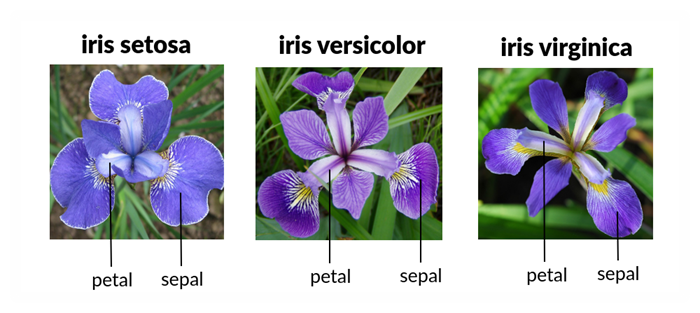

 The above image shows the three species of iris there iris_setosa,iris_versicolor and iris_virginica
Iris Dataset
Here, Dataset shows the class and features Class:-iris_setosa,iris_versicolor,iris_verginica Features:-Sepal_length,Sepal_width,petal_length,petal_width
Code
import pandas as pdimport matplotlib.pyplot as pltimport nbformatimport itertoolsimport seaborn as snsdf = pd.read_csv('iris.data', delimiter=',')df.to_excel('iris.xlsx' , index=False)columns = df.columns[df.columns !='Class'] grpdata = df.groupby(["Class"])
Descriptive Statistics
Code
def statistics(df):#numeric_columns = data.select_dtypes(include=['number']).columns#print(numeric_columns) mean_value = grpdata.mean(numeric_only=True) median_value = grpdata.median(numeric_only=True) mode_value = grpdata.apply(lambda x: x.mode().iloc[0] ifnot x.mode().empty elseNone, include_groups=False)#mode_value = grpdata.mode().iloc[0] # Using f-strings to format the outputprint(f"Mean value for each column: \n{mean_value}")print("====================================================================")print(f"Median value for each column: \n{median_value}")print('====================================================================')print(f"Mode value for each column: \n{mode_value}") for column in columns: total_sum = grpdata[column].sum() std_value = grpdata[column].std() count_value = grpdata[column].count() max_value = grpdata[column].max() min_value = grpdata[column].min()print("====================================================================")print(f"Total sum of '{column}': {total_sum}")print(f"Standard Deviation of '{column}': {std_value}")print(f"Count value of '{column}': {count_value}")print(f"Max Value of '{column}': {max_value}")print(f"Min Value of '{column}': {min_value}")return mean_value, median_value, mode_valuemean_value, median_value, mode_value = statistics(df)
Mean value for each column:
Sepal Length Sepal Width Petal Length Petal Width
Class
Iris-setosa 5.006 3.418 1.464 0.244
Iris-versicolor 5.936 2.770 4.260 1.326
Iris-virginica 6.588 2.974 5.552 2.026
====================================================================
Median value for each column:
Sepal Length Sepal Width Petal Length Petal Width
Class
Iris-setosa 5.0 3.4 1.50 0.2
Iris-versicolor 5.9 2.8 4.35 1.3
Iris-virginica 6.5 3.0 5.55 2.0
====================================================================
Mode value for each column:
0 Sepal Length Sepal Width Petal Length Petal Width
Class
Iris-setosa 5.0 3.4 1.5 0.2
Iris-versicolor 5.5 3.0 4.5 1.3
Iris-virginica 6.3 3.0 5.1 1.8
====================================================================
Total sum of 'Sepal Length': Class
Iris-setosa 250.3
Iris-versicolor 296.8
Iris-virginica 329.4
Name: Sepal Length, dtype: float64
Standard Deviation of 'Sepal Length': Class
Iris-setosa 0.352490
Iris-versicolor 0.516171
Iris-virginica 0.635880
Name: Sepal Length, dtype: float64
Count value of 'Sepal Length': Class
Iris-setosa 50
Iris-versicolor 50
Iris-virginica 50
Name: Sepal Length, dtype: int64
Max Value of 'Sepal Length': Class
Iris-setosa 5.8
Iris-versicolor 7.0
Iris-virginica 7.9
Name: Sepal Length, dtype: float64
Min Value of 'Sepal Length': Class
Iris-setosa 4.3
Iris-versicolor 4.9
Iris-virginica 4.9
Name: Sepal Length, dtype: float64
====================================================================
Total sum of 'Sepal Width': Class
Iris-setosa 170.9
Iris-versicolor 138.5
Iris-virginica 148.7
Name: Sepal Width, dtype: float64
Standard Deviation of 'Sepal Width': Class
Iris-setosa 0.381024
Iris-versicolor 0.313798
Iris-virginica 0.322497
Name: Sepal Width, dtype: float64
Count value of 'Sepal Width': Class
Iris-setosa 50
Iris-versicolor 50
Iris-virginica 50
Name: Sepal Width, dtype: int64
Max Value of 'Sepal Width': Class
Iris-setosa 4.4
Iris-versicolor 3.4
Iris-virginica 3.8
Name: Sepal Width, dtype: float64
Min Value of 'Sepal Width': Class
Iris-setosa 2.3
Iris-versicolor 2.0
Iris-virginica 2.2
Name: Sepal Width, dtype: float64
====================================================================
Total sum of 'Petal Length': Class
Iris-setosa 73.2
Iris-versicolor 213.0
Iris-virginica 277.6
Name: Petal Length, dtype: float64
Standard Deviation of 'Petal Length': Class
Iris-setosa 0.173511
Iris-versicolor 0.469911
Iris-virginica 0.551895
Name: Petal Length, dtype: float64
Count value of 'Petal Length': Class
Iris-setosa 50
Iris-versicolor 50
Iris-virginica 50
Name: Petal Length, dtype: int64
Max Value of 'Petal Length': Class
Iris-setosa 1.9
Iris-versicolor 5.1
Iris-virginica 6.9
Name: Petal Length, dtype: float64
Min Value of 'Petal Length': Class
Iris-setosa 1.0
Iris-versicolor 3.0
Iris-virginica 4.5
Name: Petal Length, dtype: float64
====================================================================
Total sum of 'Petal Width': Class
Iris-setosa 12.2
Iris-versicolor 66.3
Iris-virginica 101.3
Name: Petal Width, dtype: float64
Standard Deviation of 'Petal Width': Class
Iris-setosa 0.107210
Iris-versicolor 0.197753
Iris-virginica 0.274650
Name: Petal Width, dtype: float64
Count value of 'Petal Width': Class
Iris-setosa 50
Iris-versicolor 50
Iris-virginica 50
Name: Petal Width, dtype: int64
Max Value of 'Petal Width': Class
Iris-setosa 0.6
Iris-versicolor 1.8
Iris-virginica 2.5
Name: Petal Width, dtype: float64
Min Value of 'Petal Width': Class
Iris-setosa 0.1
Iris-versicolor 1.0
Iris-virginica 1.4
Name: Petal Width, dtype: float64
Histogram plots
Sepal Length:
Code
# Histogram for Sepal Lengthplt.figure(figsize=(6, 4))sns.histplot(df, x='Sepal Length', hue='Class', multiple='stack', kde=True, bins=30, edgecolor='k', alpha=0.7)plt.title('Histogram of Sepal Length')plt.xlabel('Sepal Length')plt.ylabel('Frequency')plt.show()
Iris-setosa: The sepal lengths for Iris-setosa are generally shorter, ranging from approximately 4.3 cm to 5.8 cm, with a peak around 5.0 cm. This species consistently shows smaller sepal lengths compared to the other species.
Iris-versicolor: The sepal lengths for Iris-versicolor range from approximately 4.9 cm to 7.0 cm, with a peak around 5.5 cm to 6.0 cm. This species shows intermediate sepal lengths compared to the other two species.
Iris-virginica: The sepal lengths for Iris-virginica are generally longer, ranging from approximately 4.9 cm to 7.9 cm, with a peak around 6.5 cm. This species consistently shows larger sepal lengths compared to the other species.
Sepal Width:
Code
# Histogram for Sepal Widthplt.figure(figsize=(6, 4))sns.histplot(df, x='Sepal Width', hue='Class', multiple='stack', kde=True, bins=30, edgecolor='k', alpha=0.7)plt.title('Histogram of Sepal Width')plt.xlabel('Sepal Width')plt.ylabel('Frequency')plt.show()
Iris-setosa: The sepal widths for Iris-setosa range from approximately 2.3 cm to 4.4 cm, with a peak around 3.4 cm. This species tends to have wider sepals compared to the other species.
Iris-versicolor: The sepal widths for Iris-versicolor range from approximately 2.0 cm to 3.4 cm, with a peak around 2.8 cm to 3.0 cm. This species shows intermediate sepal widths compared to the other two species.
Iris-virginica: The sepal widths for Iris-virginica range from approximately 2.2 cm to 3.8 cm, with a peak around 3.0 cm. This species tends to have narrower sepals compared to Iris-setosa but overlaps with Iris-versicolor.
Petal Length:
Code
# Histogram for Petal Lengthplt.figure(figsize=(6, 4))sns.histplot(df, x='Petal Length', hue='Class', multiple='stack', kde=True, bins=30, edgecolor='k', alpha=0.7)plt.title('Histogram of Petal Length')plt.xlabel('Petal Length')plt.ylabel('Frequency')plt.show()
Iris-setosa: The petal lengths for Iris-setosa are the shortest, ranging from approximately 1.0 cm to 1.9 cm, with a peak around 1.5 cm. This species has distinctively smaller petals compared to the other species.
Iris-versicolor: The petal lengths for Iris-versicolor range from approximately 3.0 cm to 5.1 cm, with a peak around 4.5 cm. This species shows intermediate petal lengths compared to the other two species.
Iris-virginica: The petal lengths for Iris-virginica are the longest, ranging from approximately 4.5 cm to 6.9 cm, with a peak around 5.5 cm. This species has the largest petals compared to the other species.
Petal Width:
Code
# Histogram for Petal Widthplt.figure(figsize=(6, 4))sns.histplot(df, x='Petal Width', hue='Class', multiple='stack', kde=True, bins=30, edgecolor='k', alpha=0.7)plt.title('Histogram of Petal Width')plt.xlabel('Petal Width')plt.ylabel('Frequency')plt.show()
Iris-setosa: The petal widths for Iris-setosa are the narrowest, ranging from approximately 0.1 cm to 0.6 cm, with a peak around 0.2 cm. This species has distinctly narrower petals compared to the other species.
Iris-versicolor: The petal widths for Iris-versicolor range from approximately 1.0 cm to 1.8 cm, with a peak around 1.3 cm. This species shows intermediate petal widths compared to the other two species.
Iris-virginica: The petal widths for Iris-virginica are the widest, ranging from approximately 1.4 cm to 2.5 cm, with a peak around 2.0 cm. This species has the largest petal widths compared to the other species.
Scatter Plots
Sepal Length vs Sepal Width:
Code
# Scatter Plot: Sepal Length vs Sepal Widthplt.figure(figsize=(7, 5))sns.scatterplot(x='Sepal Length', y='Sepal Width', hue='Class', data=df, palette='Set2')plt.title('Scatter Plot: Sepal Length vs Sepal Width by Class')plt.xlabel('Sepal Length')plt.ylabel('Sepal Width')plt.legend(title='Class')plt.grid(True)plt.show()
*Iris-setosa: This class is clustered with shorter sepal lengths (approximately 4.3 to 5.8 cm) and wider sepal widths (approximately 2.3 to 4.4 cm). Iris-setosa is easily distinguishable from the other species by these traits.
Iris-versicolor: This class shows intermediate sepal lengths (approximately 4.9 to 7.0 cm) and sepal widths (approximately 2.0 to 3.4 cm). There is some overlap with Iris-virginica.
Iris-virginica: This class is clustered with longer sepal lengths (approximately 4.9 to 7.9 cm) and narrower sepal widths (approximately 2.2 to 3.8 cm). There is some overlap with Iris-versicolor.
Sepal Length vs Petal Length:
Code
# Scatter Plot: Sepal Length vs Petal Lengthplt.figure(figsize=(7, 5))sns.scatterplot(x='Sepal Length', y='Petal Length', hue='Class', data=df, palette='Set2')plt.title('Scatter Plot: Sepal Length vs Petal Length by Class')plt.xlabel('Sepal Length')plt.ylabel('Petal Length')plt.legend(title='Class')plt.grid(True)plt.show()
Iris-setosa: This class has shorter sepal lengths (approximately 4.3 to 5.8 cm) and shorter petal lengths (approximately 1.0 to 1.9 cm). This makes Iris-setosa easily distinguishable from the other species.
Iris-versicolor: This class shows intermediate sepal lengths (approximately 4.9 to 7.0 cm) and petal lengths (approximately 3.0 to 5.1 cm). It is distinguishable from Iris-setosa but overlaps with Iris-virginica.
Iris-virginica: This class has longer sepal lengths (approximately 4.9 to 7.9 cm) and longer petal lengths (approximately 4.5 to 6.9 cm). It overlaps with Iris-versicolor but is distinguishable from Iris-setosa.
Sepal Length vs Petal Width:
Code
# Scatter Plot: Sepal Length vs Petal Widthplt.figure(figsize=(7, 5))sns.scatterplot(x='Sepal Length', y='Petal Width', hue='Class', data=df, palette='Set2')plt.title('Scatter Plot: Sepal Length vs Petal Width by Class')plt.xlabel('Sepal Length')plt.ylabel('Petal Width')plt.legend(title='Class')plt.grid(True)plt.show()
Iris-setosa: This class has shorter sepal lengths (approximately 4.3 to 5.8 cm) and narrower petal widths (approximately 0.1 to 0.6 cm). These features make Iris-setosa easily distinguishable from the other species.
Iris-versicolor: This class shows intermediate sepal lengths (approximately 4.9 to 7.0 cm) and petal widths (approximately 1.0 to 1.8 cm). It overlaps with Iris-virginica but is distinguishable from Iris-setosa.
Iris-virginica: This class has longer sepal lengths (approximately 4.9 to 7.9 cm) and wider petal widths (approximately 1.4 to 2.5 cm). It overlaps with Iris-versicolor but is distinguishable from Iris-setosa.
Sepal Width vs Petal Length:
Code
# Scatter Plot: Sepal Width vs Petal Lengthplt.figure(figsize=(7, 5))sns.scatterplot(x='Sepal Width', y='Petal Length', hue='Class', data=df, palette='Set2')plt.title('Scatter Plot: Sepal Width vs Petal Length by Class')plt.xlabel('Sepal Width')plt.ylabel('Petal Length')plt.legend(title='Class')plt.grid(True)plt.show()
Iris-setosa: This class has wider sepal widths (approximately 2.3 to 4.4 cm) and shorter petal lengths (approximately 1.0 to 1.9 cm). Iris-setosa is easily distinguishable by these features.
Iris-versicolor: This class shows intermediate sepal widths (approximately 2.0 to 3.4 cm) and petal lengths (approximately 3.0 to 5.1 cm). It overlaps with Iris-virginica but is distinguishable from Iris-setosa.
Iris-virginica: This class has narrower sepal widths (approximately 2.2 to 3.8 cm) and longer petal lengths (approximately 4.5 to 6.9 cm). It overlaps with Iris-versicolor but is distinguishable from Iris-setosa.
Sepal Width vs Petal Width:
Code
# Scatter Plot: Sepal Width vs Petal Widthplt.figure(figsize=(7, 5))sns.scatterplot(x='Sepal Width', y='Petal Width', hue='Class', data=df, palette='Set2')plt.title('Scatter Plot: Sepal Width vs Petal Width by Class')plt.xlabel('Sepal Width')plt.ylabel('Petal Width')plt.legend(title='Class')plt.grid(True)plt.show()
Iris-setosa: This class has wider sepal widths (approximately 2.3 to 4.4 cm) and narrower petal widths (approximately 0.1 to 0.6 cm). These features make Iris-setosa easily distinguishable.
Iris-versicolor: This class shows intermediate sepal widths (approximately 2.0 to 3.4 cm) and petal widths (approximately 1.0 to 1.8 cm). It overlaps with Iris-virginica but is distinguishable from Iris-setosa.
Iris-virginica: This class has narrower sepal widths (approximately 2.2 to 3.8 cm) and wider petal widths (approximately 1.4 to 2.5 cm). It overlaps with Iris-versicolor but is distinguishable from Iris-setosa.
Petal Length vs Petal Width:
Code
# Scatter Plot: Petal Length vs Petal Widthplt.figure(figsize=(7, 5))sns.scatterplot(x='Petal Length', y='Petal Width', hue='Class', data=df, palette='Set2')plt.title('Scatter Plot: Petal Length vs Petal Width by Class')plt.xlabel('Petal Length')plt.ylabel('Petal Width')plt.legend(title='Class')plt.grid(True)plt.show()
Iris-setosa: This class has shorter petal lengths (approximately 1.0 to 1.9 cm) and narrower petal widths (approximately 0.1 to 0.6 cm). These features make Iris-setosa easily distinguishable.
Iris-versicolor: This class shows intermediate petal lengths (approximately 3.0 to 5.1 cm) and petal widths (approximately 1.0 to 1.8 cm). It overlaps with Iris-virginica but is distinguishable from Iris-setosa.
Iris-virginica: This class has longer petal lengths (approximately 4.5 to 6.9 cm) and wider petal widths (approximately 1.4 to 2.5 cm). It overlaps with Iris-versicolor but is distinguishable from Iris-setosa.
Box Plots
Sepal Length:
Code
# Box Plot for Sepal Lengthplt.figure(figsize=(6, 4))sns.boxplot(x='Class', y='Sepal Length', hue='Class', data=df, palette='Set2')plt.title('Box plot of Sepal Length by Class')plt.xlabel('Class')plt.ylabel('Sepal Length')plt.show()
Iris-setosa: The box plot for sepal length shows that Iris-setosa typically has shorter sepal lengths, with values ranging from approximately 4.3 cm to 5.8 cm. The median sepal length is around 5.0 cm.
Iris-versicolor: The sepal lengths for Iris-versicolor are intermediate, ranging from approximately 4.9 cm to 7.0 cm. The median sepal length is around 5.9 cm.
Iris-virginica: The sepal lengths for Iris-virginica are the longest, ranging from approximately 4.9 cm to 7.9 cm. The median sepal length is around 6.5 cm.
Sepal Width:
Code
# Box Plot for Sepal Widthplt.figure(figsize=(6, 4))sns.boxplot(x='Class', y='Sepal Width', hue='Class', data=df, palette='Set2')plt.title('Box plot of Sepal Width by Class')plt.xlabel('Class')plt.ylabel('Sepal Width')plt.show()
Iris-setosa: The box plot for sepal width indicates that Iris-setosa has the widest sepals, with values ranging from approximately 2.3 cm to 4.4 cm. The median sepal width is around 3.4 cm.
Iris-versicolor: The sepal widths for Iris-versicolor are intermediate, ranging from approximately 2.0 cm to 3.4 cm. The median sepal width is around 2.8 cm.
Iris-virginica: The sepal widths for Iris-virginica are the narrowest, ranging from approximately 2.2 cm to 3.8 cm. The median sepal width is around 3.0 cm.
Petal Length:
Code
# Box Plot for Petal Lengthplt.figure(figsize=(6, 4))sns.boxplot(x='Class', y='Petal Length', hue='Class', data=df, palette='Set2')plt.title('Box plot of Petal Length by Class')plt.xlabel('Class')plt.ylabel('Petal Length')plt.show()
Iris-setosa: The box plot for petal length shows that Iris-setosa has the shortest petals, with values ranging from approximately 1.0 cm to 1.9 cm. The median petal length is around 1.5 cm.
Iris-versicolor: The petal lengths for Iris-versicolor are intermediate, ranging from approximately 3.0 cm to 5.1 cm. The median petal length is around 4.3 cm.
Iris-virginica: The petal lengths for Iris-virginica are the longest, ranging from approximately 4.5 cm to 6.9 cm. The median petal length is around 5.5 cm.
Petal Width:
Code
# Box Plot for Petal Widthplt.figure(figsize=(6, 4))sns.boxplot(x='Class', y='Petal Width', hue='Class', data=df, palette='Set2')plt.title('Box plot of Petal Width by Class')plt.xlabel('Class')plt.ylabel('Petal Width')plt.show()
Iris-setosa: The box plot for petal width shows that Iris-setosa has the narrowest petals, with values ranging from approximately 0.1 cm to 0.6 cm. The median petal width is around 0.2 cm.
Iris-versicolor: The petal widths for Iris-versicolor are intermediate, ranging from approximately 1.0 cm to 1.8 cm. The median petal width is around 1.3 cm.
Iris-virginica: The petal widths for Iris-virginica are the widest, ranging from approximately 1.4 cm to 2.5 cm. The median petal width is around 2.0 cm.
Correlation Heatmaps and Descriptions by Class
Correlation Heatmap for Iris-setosa:
Code
# Correlation heatmap for Iris-setosasetosa_df = df[df['Class'] =='Iris-setosa'].drop(columns=['Class'])plt.figure(figsize=(8, 6))sns.heatmap(setosa_df.corr(), annot=True, cmap='coolwarm', vmin=-1, vmax=1)plt.title('Correlation Heatmap for Iris-setosa')plt.show()
Sepal Length and Sepal Width: There is a weak negative correlation between sepal length and sepal width for Iris-setosa.
Sepal Length and Petal Length: There is a moderate positive correlation between sepal length and petal length for Iris-setosa.
Sepal Length and Petal Width: There is a moderate positive correlation between sepal length and petal width for Iris-setosa.
Sepal Width and Petal Length: There is a weak positive correlation between sepal width and petal length for Iris-setosa.
Sepal Width and Petal Width: There is a weak positive correlation between sepal width and petal width for Iris-setosa.
Petal Length and Petal Width: There is a strong positive correlation between petal length and petal width for Iris-setosa.
Correlation Heatmap for Iris-versicolor:
Code
# Correlation heatmap for Iris-versicolorversicolor_df = df[df['Class'] =='Iris-versicolor'].drop(columns=['Class'])plt.figure(figsize=(8, 6))sns.heatmap(versicolor_df.corr(), annot=True, cmap='coolwarm', vmin=-1, vmax=1)plt.title('Correlation Heatmap for Iris-versicolor')plt.show()
Sepal Length and Sepal Width: There is a weak negative correlation between sepal length and sepal width for Iris-versicolor.
Sepal Length and Petal Length: There is a strong positive correlation between sepal length and petal length for Iris-versicolor.
Sepal Length and Petal Width: There is a moderate positive correlation between sepal length and petal width for Iris-versicolor.
Sepal Width and Petal Length: There is a weak negative correlation between sepal width and petal length for Iris-versicolor.
Sepal Width and Petal Width: There is a weak negative correlation between sepal width and petal width for Iris-versicolor.
Petal Length and Petal Width: There is a strong positive correlation between petal length and petal width for Iris-versicolor.
Correlation Heatmap for Iris-virginica:
Code
# Correlation heatmap for Iris-virginicavirginica_df = df[df['Class'] =='Iris-virginica'].drop(columns=['Class'])plt.figure(figsize=(8, 6))sns.heatmap(virginica_df.corr(), annot=True, cmap='coolwarm', vmin=-1, vmax=1)plt.title('Correlation Heatmap for Iris-virginica')plt.show()
Sepal Length and Sepal Width: There is a weak negative correlation between sepal length and sepal width for Iris-virginica.
Sepal Length and Petal Length: There is a strong positive correlation between sepal length and petal length for Iris-virginica.
Sepal Length and Petal Width: There is a strong positive correlation between sepal length and petal width for Iris-virginica.
Sepal Width and Petal Length: There is a weak negative correlation between sepal width and petal length for Iris-virginica.
Sepal Width and Petal Width: There is a weak negative correlation between sepal width and petal width for Iris-virginica.
Petal Length and Petal Width: There is a strong positive correlation between petal length and petal width for Iris-virginica.